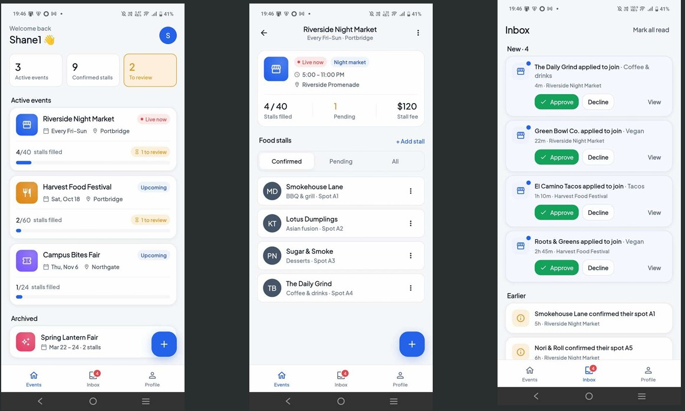

All Projects

Stromen Streaming Platform
Microservices-based streaming backend built with NestJS, RabbitMQ, PostgreSQL, Docker, and React frontend.
NestJS
Next.js
TypeScript
RabbitMQ
PostgreSQL
MiniIO
FFmpeg
View Source

Potato Disease Detection
Computer Vision pipeline utilizing YOLO object detection for automated potato quality control and disease classification.
Python
YOLO
PyTorch
View Source

Wukwembege
Wukwembege is a mobile application designed to connect event organizers with food stall vendors. Organizers can create and manage events, while vendors can discover available events and book stall spaces.
Flutter
Firebase
MySQL
Javascript
Dart
View Source